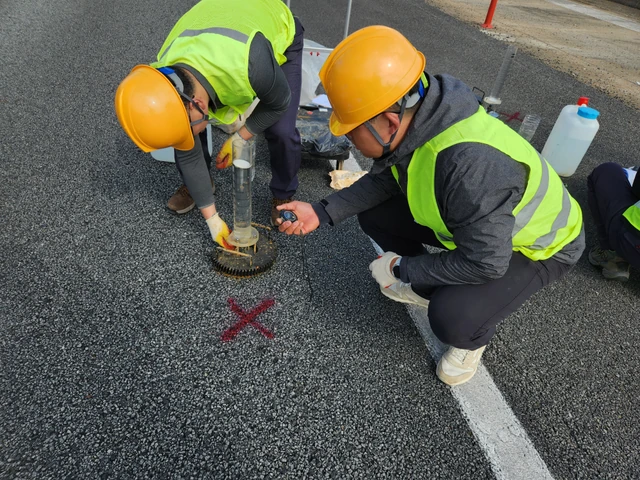
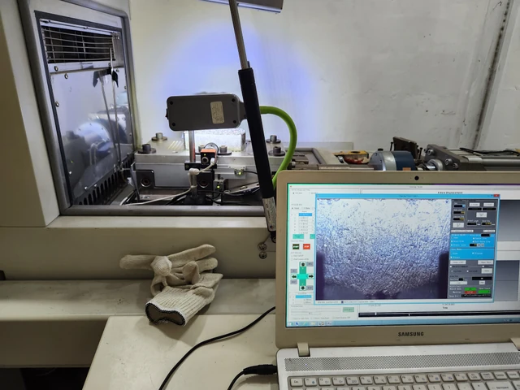

포장재료 · 아스팔트 혼합물 · 현장 공용성능
박성현
저온 성능에서 현장 공용성능까지, 아스팔트 재료를 연구합니다.
포장재료 연구자이자 토목 엔지니어로서 시편 제작, 실내시험, 현장 측정과 연구기록을 연결해 왔습니다.
주요 포장공학 연구
포장공학 연구경험



매스틱 교면포장·Overlay 시험
LMC 비교군과 3개 업체의 매스틱 시편을 제작하고 TxDOT Overlay 시험을 직접 수행했습니다. 하중–반복횟수와 균열 진전을 분석했습니다.
방법·기여·사진 보기결빙방지 혼합물 표준화 제안
한국산업표준 제안의 필요성과 증빙자료를 작성하고 보고서를 편집했습니다. 최종 심의까지 진행됐으며 정식 표준 제정은 미완료입니다.
바인더 생산·강성 기술고찰
직장생활과 병행하여 원유 통계·정유 및 포장 문헌을 분석하고 정유 엔지니어를 인터뷰했습니다. AP-5 생산 제약 주장을 평가하는 기술노트를 작성했습니다.
제1저자 논문 읽기 ↗방법과 역량
시편에서 현장 측정까지
실내시험
혼합물 배합설계·시편 제작, 마샬 안정도·ITS·칸타브로·Gmm·Overlay 직접 시험.
현장 측정 지원
투수·미끄럼저항·FWD 시험 지원과 기술보고·과제 문서화.
분석·공학 도구
통계분석 보조와 자료 정합성 점검. AutoCAD·SUNEX·GeoStudio SLOPE/W를 활용한 설계·검토 지원.
연구성과
논문과 학술발표
2023제2저자·교신저자
통계분석 기법을 적용한 고점도 아스팔트 바인더의 저온 휨 특성 연구 ↗
2024제2저자·교신저자
에폭시 아스팔트 혼합물의 국내 도로포장 적용성 검토 ↗
2026제1저자
원유 수급 변화에 따른 아스팔트 바인더의 생산과 강성에 관한 기술적 고찰 ↗
* 교신저자. 논문은 한국어 본문·영문 초록으로 게재되었습니다.
학술대회 포스터
보조 연구: 지반앵커 실증 ↗예정: 대한토목학회 2026 Convention · 정선 · 2026.10.21–23
고각 지반앵커의 설치 각도가 TEA 가이드 브래킷의 마찰손실에 미치는 영향에 관한 실험적 연구. 논문집 수록 및 포스터 직접 발표 예정·교신저자.
배경과 경력
연구 기반과 엔지니어링 실무
학력
서울과학기술대학교 건설시스템공학과 공학사(토목공학), 2019–2025.
포장 연구
서울과학기술대학교 도로·포장연구실 학부연구생, 2023.03–2025.01.
실무경력
(주)신화피에스이앤씨 설계1본부 사원, 2025.01–현재. 흙막이 설계를 지원하고 실규모 지반앵커 재하 시험, 계측자료 점검과 기술 해석에 참여합니다.
CV와 연락처
연구 문의
학술 이력서(CV)는 요청 시 제공해 드립니다.